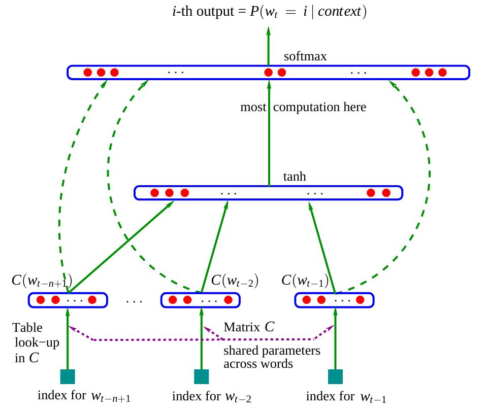

Réseau entièrement connecté#
Architecture du réseau#
Dans les cours précédents (cours 2), nous avons construit des réseaux de neurones entièrement connectés pour des problèmes de classification. Ici, nous traitons un problème de prédiction avec des données discrètes.
Inspiration du modèle#
Le réseau présenté dans ce notebook s’inspire de l’article “A Neural Probabilistic Language Model”.
Voici l’architecture de ce réseau :

Figure extraite de l’article original.
Dans l’article, le modèle utilise trois mots en entrée pour prédire le mot suivant. Dans notre cas, nous allons utiliser des caractères, comme dans le notebook précédent.
Matrice d’embedding \(C\) : On observe que le réseau contient une matrice \(C\) qui encode les mots (ou caractères) dans un espace latent. Cette pratique est courante en NLP car elle rapproche les mots similaires dans cet espace. Par exemple, dans la plupart des phrases, on peut interchanger “chien” et “chat”, ce qui signifie que ces mots auront une représentation proche dans l’espace latent, contrairement à “chien” et “est”.
Reste du réseau : Le reste du réseau est plus classique. Il prend en entrée la concaténation des embeddings des différents mots (ou caractères) et prédit un mot (ou caractère) en sortie.
Le modèle de l’article est entraîné par minimisation du log-vraisemblance négative (comme nous l’avons fait dans le notebook précédent avec le modèle bigramme).
Notre approche#
Dans l’article, ils utilisent trois mots pour prédire le quatrième mot. Nous allons appliquer le même principe et prédire le quatrième caractère à partir des trois caractères précédents. La dimension de l’espace latent utilisé dans l’article est de 30 pour un dictionnaire contenant 17 000 mots distincts. Comme nous avons 46 caractères, nous choisirons une dimension d’embedding de 10 de manière arbitraire.
Implémentation du réseau#
Commençons par reconstruire nos listes stoi et itos du notebook précédent :
import torch
import torch.nn.functional as F
import matplotlib.pyplot as plt
from torch.utils.data import TensorDataset, DataLoader, random_split
%matplotlib inline
words = open('prenoms.txt', 'r').read().splitlines()
chars = sorted(list(set(''.join(words))))
stoi = {s:i+1 for i,s in enumerate(chars)}
stoi['.'] = 0
itos = {i:s for s,i in stoi.items()}
Création du dataset et du dataloader#
Construisons notre dataset, qui diffère légèrement car les entrées seront au nombre de trois au lieu d’une.
block_size = 3 # La longueur du contexte, combien de caractères pour prédire le suivant ?
X, Y = [], []
for k,w in enumerate(words):
context = [0] * block_size
for ch in w + '.':
ix = stoi[ch]
X.append(context)
Y.append(ix)
if (k<2): ## On affiche ce à quoi ressemble le dataset pour les deux premiers mots
print(''.join(itos[i] for i in context), '--->', itos[ix])
context = context[1:] + [ix] # crop and append
... ---> M
..M ---> A
.MA ---> R
MAR ---> I
ARI ---> E
RIE ---> .
... ---> J
..J ---> E
.JE ---> A
JEA ---> N
EAN ---> .
X = torch.tensor(X)
Y = torch.tensor(Y)
print(X.shape, X.dtype, Y.shape, Y.dtype)
torch.Size([226325, 3]) torch.int64 torch.Size([226325]) torch.int64
Nous allons maintenant utiliser PyTorch pour construire nos datasets d’entraînement, de validation et de test.
dataset=TensorDataset(X, Y)
train_size = int(0.8 * len(dataset))
val_size = int(0.1 * len(dataset))
test_size = len(dataset) - train_size - val_size
train_dataset, val_dataset, test_dataset = random_split(TensorDataset(X, Y),[train_size, val_size, test_size])
print("Taille du dataset de training : ",len(train_dataset))
print("Taille du dataset de validation : ",len(val_dataset))
print("Taille du dataset de test : ",len(test_dataset))
Taille du dataset de training : 181060
Taille du dataset de validation : 22632
Taille du dataset de test : 22633
Nous allons également créer nos dataloaders pour l’optimisation par mini-lots.
train_loader = DataLoader(train_dataset, batch_size=256, shuffle=True)
val_loader = DataLoader(val_dataset, batch_size=256, shuffle=False)
test_loader = DataLoader(test_dataset, batch_size=256, shuffle=False)
Couches du réseau#
Pour bien comprendre le réseau que nous construisons, nous n’utiliserons pas les fonctions nn.Linear() de PyTorch pour créer les couches. Nous allons d’abord définir le nombre de neurones pour chaque couche.
embed_dim=10 # Dimension de l'embedding de C
hidden_dim=200 # Dimension de la couche cachée
Construisons notre matrice \(C\) d’embedding (avec des paramètres apprenables).
C = torch.randn((46, embed_dim))
C[X].shape
torch.Size([226325, 3, 10])
En appelant C[X], grâce à l’indexation de PyTorch (lien), on obtient les valeurs d’embedding de chacun des trois caractères de nos 226 325 exemples.
Nous pouvons maintenant créer nos couches cachées \(W_1\) et \(W_2\) ainsi que leurs biais \(b_1\) et \(b_2\).
W1 = torch.randn((block_size*embed_dim, hidden_dim))
b1 = torch.randn(hidden_dim)
W2 = torch.randn((hidden_dim, 46))
b2 = torch.randn(46)
parameters = [C, W1, b1, W2, b2]
print("Nombre de paramètres du modèle : ",sum(p.nelement() for p in parameters))
Nombre de paramètres du modèle : 15906
Pour entraîner ces couches, nous devons activer le paramètre requires_grad de PyTorch. Cela permet de spécifier que nous voulons calculer les gradients pour ces éléments.
for p in parameters:
p.requires_grad = True
La fonction tangente hyperbolique#
Dans notre optimisation, nous avons utilisé la fonction tangente hyperbolique comme fonction d’activation. Elle est définie comme suit : \(\tanh(x) = \frac{\sinh(x)}{\cosh(x)} = \frac{e^x - e^{-x}}{e^x + e^{-x}}\) On peut la visualiser en Python :
import numpy as np
x = np.linspace(-10, 10, 400)
y = np.tanh(x)
plt.figure(figsize=(4, 3))
plt.plot(x, y, label='tanh(x)')
plt.title('Tangente Hyperbolique')
plt.xlabel('x')
plt.ylabel('tanh(x)')
plt.grid(True)
plt.legend()
plt.show()

En général, dans les couches cachées de notre réseau, nous privilégions l’utilisation de la fonction tanh plutôt que de la fonction sigmoïde pour plusieurs raisons :
La plage de sortie centrée sur zéro (-1 à 1) facilite l’apprentissage.
Les gradients sont plus importants pour des valeurs entre -2 et 2 que pour la fonction sigmoïde.
Ces deux points contribuent à réduire le problème de gradient évanescent et permettent une convergence plus rapide lors de l’entraînement.
Optimisation du réseau#
Passons maintenant à l’optimisation de notre réseau. Définissons nos hyperparamètres :
lr=0.2
epochs=100
# Reinitialisons les paramètres pour plus de simplicité si on a besoin de relancer l'entraînement
C = torch.randn((46, embed_dim))
W1 = torch.randn((block_size*embed_dim, hidden_dim))
b1 = torch.randn(hidden_dim)
W2 = torch.randn((hidden_dim, 46))
b2 = torch.randn(46)
parameters = [C, W1, b1, W2, b2]
for p in parameters:
p.requires_grad = True
lossi=[]
lossvali=[]
stepi = []
for epoch in range(epochs):
loss_epoch=0
for x,y in train_loader:
# forward pass
emb = C[x]
h = torch.tanh(emb.view(-1, block_size*embed_dim) @ W1 + b1)
logits = h @ W2 + b2
loss = F.cross_entropy(logits, y)
# retropropagation
for p in parameters:
p.grad = None
loss.backward()
# Mise à jour des poids du modèle
lr=lr if epoch<50 else lr*0.1
for p in parameters:
p.data += -lr * p.grad
loss_epoch+=loss
loss_epoch=loss_epoch/len(train_loader)
stepi.append(epoch)
lossi.append(loss_epoch.item())
# Calcul du loss de validation (pour surveiller l'overfitting)
loss_val=0
for x,y in val_loader:
emb = C[x]
h = torch.tanh(emb.view(-1, block_size*embed_dim) @ W1 + b1)
logits = h @ W2 + b2
loss = F.cross_entropy(logits, y)
loss_val+=loss
loss_val=loss_val/len(val_loader)
lossvali.append(loss_val.item())
if epoch%10==0:
print(f"Epoch {epoch} - Training loss: {loss_epoch.item():.3f}, Validation loss: {loss_val.item():.3f}")
Epoch 0 - Training loss: 5.273, Validation loss: 3.519
Epoch 10 - Training loss: 2.424, Validation loss: 2.594
Epoch 20 - Training loss: 2.337, Validation loss: 2.421
Epoch 30 - Training loss: 2.289, Validation loss: 2.468
Epoch 40 - Training loss: 2.259, Validation loss: 2.424
Epoch 50 - Training loss: 2.327, Validation loss: 2.372
Epoch 60 - Training loss: 2.326, Validation loss: 2.372
Epoch 70 - Training loss: 2.326, Validation loss: 2.372
Epoch 80 - Training loss: 2.326, Validation loss: 2.372
Epoch 90 - Training loss: 2.326, Validation loss: 2.372
Traçons les courbes d’entraînement et de validation.
plt.plot(stepi, lossi)
plt.plot(stepi,lossvali)
[<matplotlib.lines.Line2D at 0x72e6a443edd0>]

Test du modèle#
Maintenant que le modèle est entraîné, nous allons vérifier ses performances sur les données de test. Si la perte sur les données de test est similaire à celle de l’entraînement, alors le modèle est bien entraîné. Sinon, il peut y avoir un surapprentissage (overfitting).
# On annule le calcul des gradients car on n'est plus en phase d'entraînement.
for p in parameters:
p.requires_grad = False
loss_test=0
for x,y in test_loader:
# forward pass
emb = C[x]
h = torch.tanh(emb.view(-1, 30) @ W1 + b1)
logits = h @ W2 + b2
loss = F.cross_entropy(logits, y)
loss_test+=loss
loss_test=loss_test/len(test_loader)
print(loss_test)
tensor(2.3505)
La vraisemblance sur les données de test est relativement proche de celle des données d’entraînement, ce qui montre que l’entraînement s’est bien déroulé.
On observe que la valeur du log-vraisemblance négative de notre modèle est inférieure à celle du modèle bigramme du notebook précédent (\(2.3 < 2.5\)). La qualité des prénoms générés devrait donc être améliorée.
Génération de prénoms avec notre modèle#
Générons une vingtaine de prénoms pour évaluer nous-mêmes la qualité de la génération.
for _ in range(20):
out = []
context = [0] * block_size
while True:
emb = C[torch.tensor([context])]
h = torch.tanh(emb.view(1, -1) @ W1 + b1)
logits = h @ W2 + b2
probs = F.softmax(logits, dim=1)
ix = torch.multinomial(probs, num_samples=1).item()
context = context[1:] + [ix]
out.append(ix)
if ix == 0:
break
print(''.join(itos[i] for i in out))
JAÏMANT.
SONELIUWAN.
LYPHELSÏL.
DJELINATHEYMONDALYANE.
ERNANDRAN.
ESMALLOONIS.
ASHAMLANCHOND.
ANNAE.
CHALLA.
ETTE.
ASSANE.
MARIANE.
FIHAYLAY.
SHANA.
ALPHENELIESON.
ESÏL.
EVEY.
YSLALLYSSIA.
ETHELDOF.
KELLAH.
Les prénoms générés sont encore étranges, mais ils ressemblent déjà beaucoup plus à des prénoms “possibles” comparés à ceux produits par le modèle bigramme.
Exercice : Essayez de modifier le nombre de neurones des couches ou les hyperparamètres pour améliorer le modèle et observer la différence dans la qualité de génération.
Visualisation des embeddings#
Plus tôt dans le notebook, nous avons expliqué l’intuition derrière la matrice d’embedding \(C\), qui permet de rapprocher les mots (ou caractères) ayant un sens proche. Il n’est pas facile de visualiser la position de chaque caractère dans la matrice \(C\). Pour y parvenir, nous allons réentraîner un modèle avec une dimension d’embedding de 2 au lieu de 10. Cela nous permettra de visualiser la matrice \(C\).
Note : Pour visualiser les embeddings de dimension supérieure à 2 en 2D, on peut utiliser la méthode T-SNE ou UMAP.
lr=0.2
epochs=100
C = torch.randn((46, 2)) # 2 au lieu de embed_dim
W1 = torch.randn((block_size*2, hidden_dim))
b1 = torch.randn(hidden_dim)
W2 = torch.randn((hidden_dim, 46))
b2 = torch.randn(46)
parameters = [C, W1, b1, W2, b2]
for p in parameters:
p.requires_grad = True
lossi=[]
stepi = []
for epoch in range(epochs):
loss_epoch=0
for x,y in train_loader:
# forward pass
emb = C[x]
h = torch.tanh(emb.view(-1, 6) @ W1 + b1) #6 au lieu de 30
logits = h @ W2 + b2
loss = F.cross_entropy(logits, y)
# retropropagation
for p in parameters:
p.grad = None
loss.backward()
# Mise à jour des poids du modèle
lr=lr if epoch<50 else lr*0.1
for p in parameters:
p.data += -lr * p.grad
loss_epoch+=loss
loss_epoch=loss_epoch/len(train_loader)
stepi.append(epoch)
lossi.append(loss_epoch.item())
# Validation
loss_val=0
for x,y in val_loader:
emb = C[x]
h = torch.tanh(emb.view(-1, 6) @ W1 + b1) #6 au lieu de 30
logits = h @ W2 + b2
loss = F.cross_entropy(logits, y)
loss_val+=loss
loss_val=loss_val/len(val_loader)
lossvali.append(loss_val.item())
if epoch%10==0:
print(f"Epoch {epoch} - Training loss: {loss_epoch.item():.3f}, Validation loss: {loss_val.item():.3f}")
Epoch 0 - Training loss: 3.822, Validation loss: 3.294
Epoch 10 - Training loss: 2.490, Validation loss: 2.616
Epoch 20 - Training loss: 2.425, Validation loss: 2.532
Epoch 30 - Training loss: 2.388, Validation loss: 2.498
Epoch 40 - Training loss: 2.365, Validation loss: 2.529
Epoch 50 - Training loss: 2.386, Validation loss: 2.399
Epoch 60 - Training loss: 2.385, Validation loss: 2.399
Epoch 70 - Training loss: 2.386, Validation loss: 2.399
Epoch 80 - Training loss: 2.385, Validation loss: 2.399
Epoch 90 - Training loss: 2.385, Validation loss: 2.399
Comme vous pouvez le voir, la perte est plus élevée car une dimension d’embedding de 2 est insuffisante pour représenter correctement chaque caractère. En revanche, nous pouvons maintenant visualiser la position des caractères dans l’espace latent.
# visualize dimensions 0 and 1 of the embedding matrix C for all characters
plt.figure(figsize=(8,8))
plt.scatter(C[:,0].data, C[:,1].data, s=200)
for i in range(C.shape[0]):
plt.text(C[i,0].item(), C[i,1].item(), itos[i], ha="center", va="center", color='white')
plt.grid('minor')

On observe une tendance avec un regroupement des voyelles et des consonnes (souvent interchangeables dans un prénom). Les caractères rares ont des embeddings distincts (‘ç’, ‘ö’, ‘ë’). On remarque aussi la proximité entre ‘.’ et ‘-’ ce qui est logique pour un prénom composé en français. Cela montre que la matrice \(C\) a appris une sorte de mapping des caractères en fonction de leur proximité sémantique.
Comment choisir le bon taux d’apprentissage ?#
Le choix du taux d’apprentissage est crucial lors de l’entraînement d’un réseau de neurones et il est souvent difficile de déterminer la bonne valeur sans tests préalables. Une bonne méthode pour choisir le taux d’apprentissage consiste à :
Créer une liste de 1000 valeurs entre -3 et 0
Prendre \(10^{valeur}\) pour chaque valeur Cela nous donne une liste de valeurs entre \(10^{-3} = 0.001\) et \(10^{0} = 1\), qui sont des candidats potentiels pour le taux d’apprentissage. Les valeurs -3 et 0 peuvent varier, vous devez essayer de trouver des valeurs encadrant le taux d’apprentissage optimal.
Ensuite, nous allons suivre les valeurs de perte en fonction du taux d’apprentissage pour l’ensemble des valeurs d’entraînement.
Cette courbe montre qu’une bonne valeur de taux d’apprentissage se situe entre \(10^{-1}\) et \(10^{-0.5}\). Nous choisirons donc un taux d’apprentissage de 0.2, que nous diminuerons au cours de l’entraînement (une pratique courante pour une convergence rapide et une optimisation précise en fin d’entraînement).